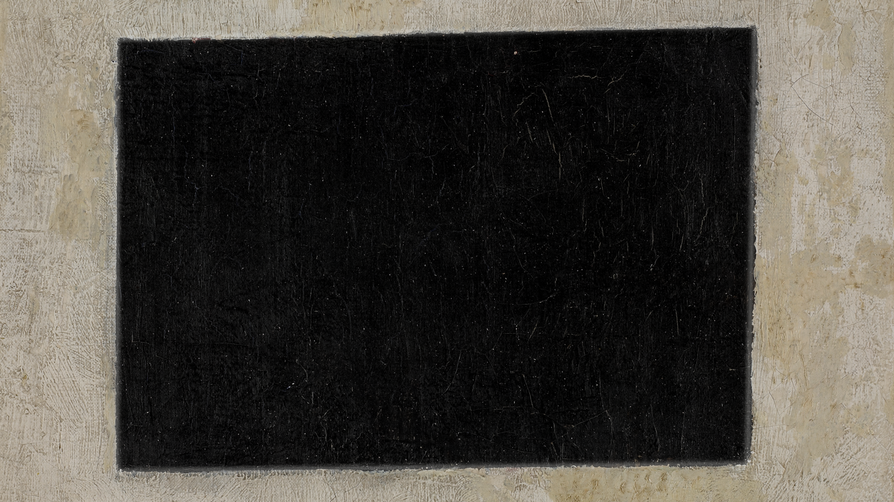

Μπράβο!
Όταν ο πίνακας Μαύρο Τετράπλευρο αναλύθηκε από την ειδική στη συντήρηση έργων τέχνης Μαρία Κόκκορη, η ακτινογραφία αποκάλυψε ίχνη ενός προηγούμενου πίνακα κάτω από αυτόν.

Ήταν μέρος ενός χαμένου πίνακα, ένα από τα σκίτσα του οποίου είναι γνωστό με τον τίτλο Πόλεμος (1914) και απεικονίζει ένα άλογο με τις λέξεις «Βερολίνο», «Πόλεμος», «Δόντια», «Πλάθος», «Ζωγραφική» και "Simulation" (Συλλογή Khardzhiev, Μουσείο Stedelijk, Άμστερνταμ).

Σύμφωνα με τον Κόκκορη, δεν υπήρχε σχεδόν καθόλου σκόνη ανάμεσα στα δύο χρωματιστά στρώματα, πράγμα που σημαίνει ότι ο Μάλεβιτς ζωγράφισε αυτό το συγκεκριμένο σουπρεματιστικό έργο αμέσως μετά την ολοκλήρωση του προηγούμενου πίνακα, καθιστώντας το Μαύρο Τετράπλευρο ένα από τα πρώτα έργα της σουπρεματιστικής ζωγραφικής και κορυφαίας με ασφάλεια το χρονολογούμε από το 1915.